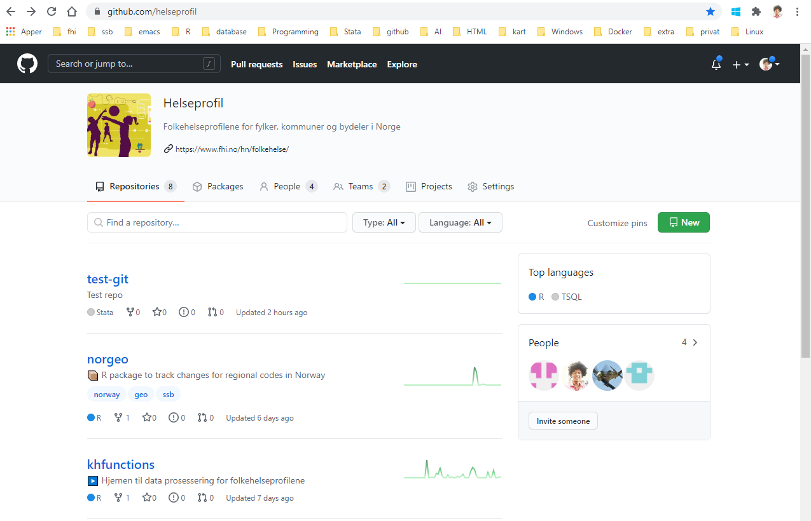
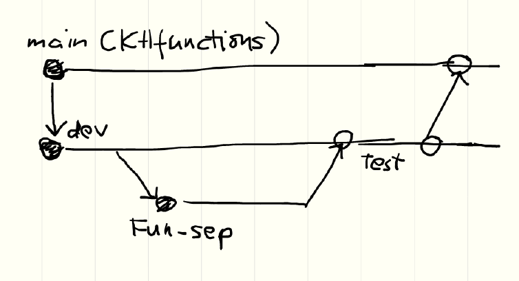
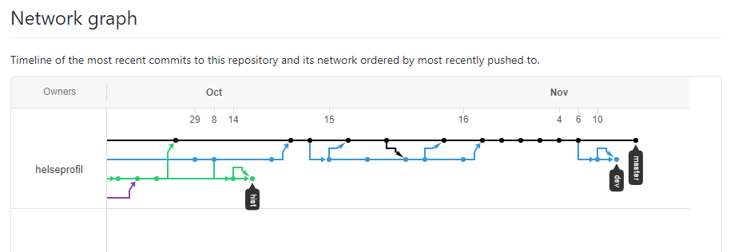

https://github.com/helseprofil

test repo
https://github.com/helseprofil/test-git

Kopierer filer fra main branch til lokal pc med
git clone https://github.com/helseprofil/test-git.git

Kopierer filer fra branch origin/dev for testing
git checkout --track origin/devgit pull
Bytt branch dev
git checkout devgit pullSjekk hvilken branch
git branchSe hvis filen har endret
git statusTilbakestilt koder
git stashKlone repo
https://www.youtube.com/watch?v=1WNneqs1tBk
Test branch